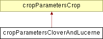

Main Page
Classes
Files
Class List
Class Hierarchy
Class Members
cropParametersCloverAndLucerne Class Reference
Inheritance diagram for cropParametersCloverAndLucerne:

List of all members.
Public Attributes
double
MaxFixPerDM
double
PotNFix
double
NFixationThisDay
double
DMCostPerN
bool
MaxFixPerDMFile
bool
PotNFixFile
bool
NFixationThisDayFile
bool
DMCostPerNFile
Detailed Description
Definition at line
219
of file
cropParametersData.h
.
The documentation for this class was generated from the following file:
C:/main/trunk/src/data/
cropParametersData.h
All
Classes
Functions
Variables
Typedefs
Friends
Generated on Mon Jun 21 13:18:02 2010 for fasset by
1.6.0
 1.6.0
1.6.0